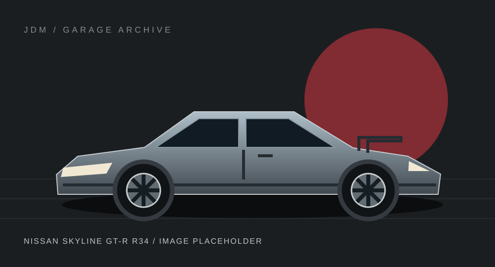
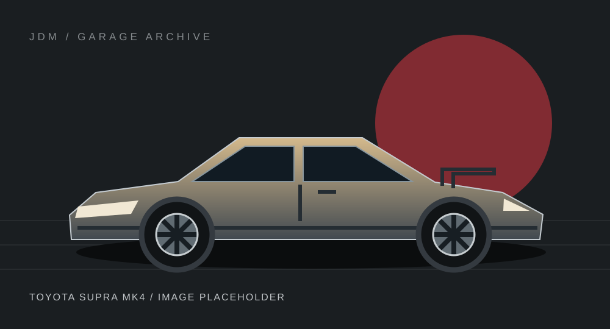
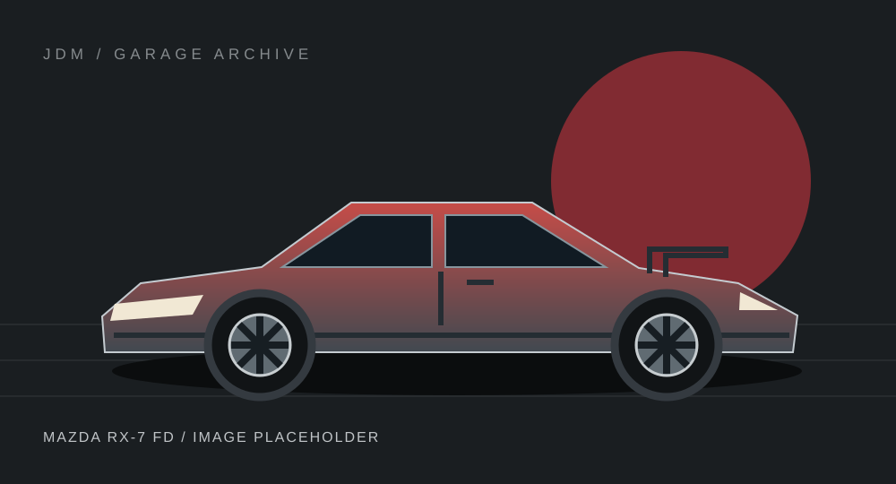
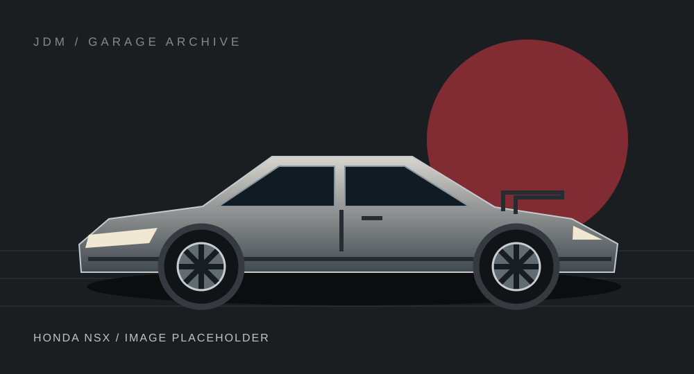
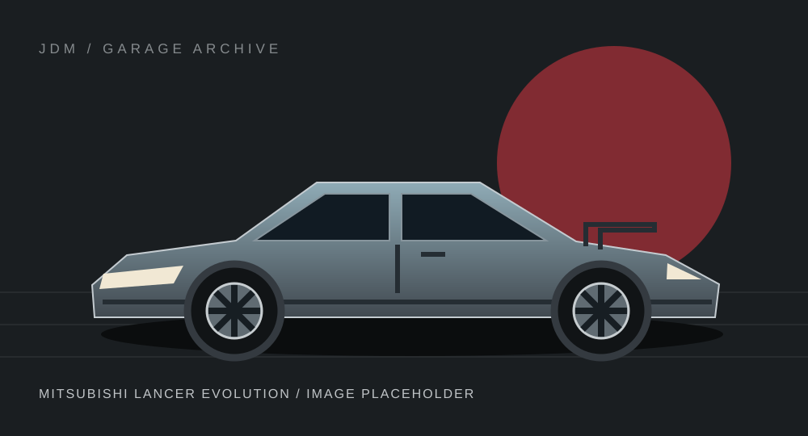
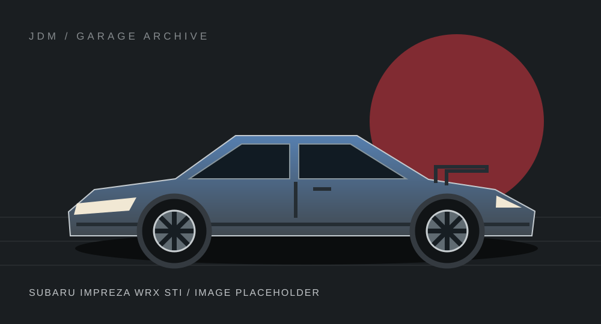
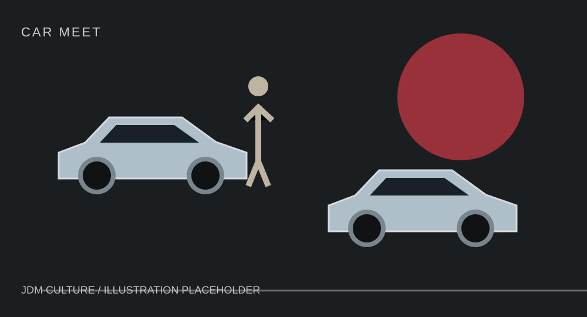
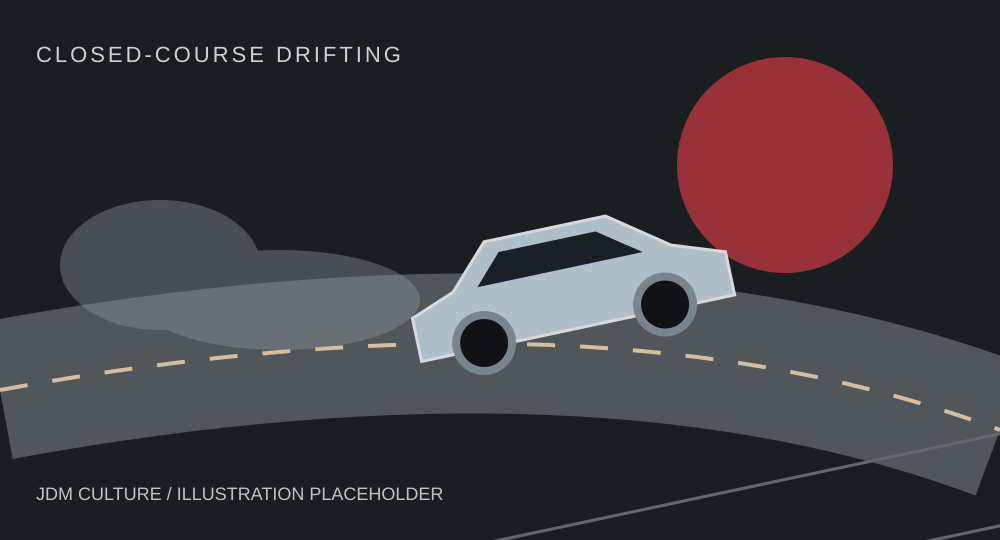

Shared knowledge, personal expression and a love of driving. There is more
to JDM than the specification sheet.
From mountain landscapes to the paddock: an illustration of the setting that
inspires the scene.
People & places
Japanese Car Culture
Car meets bring owners together to share builds, exchange knowledge and
appreciate different styles. Tuning can be an expression of personality,
from subtle factory-inspired details to dedicated motorsport projects.
Japanese street culture has influenced wheels, body styling and
enthusiast photography around the world. Organized meets and track
events give communities a place to enjoy this shared interest
responsibly.
The art of the slide
Drifting
Drifting involves maintaining a controlled slide through a corner. Japan
helped popularize the style, with roots associated with mountain-road
driving and a later evolution into organized motorsport.
Rear-wheel-drive cars are common in drift competitions. On closed
courses, judges assess elements such as line, angle and style. Public
roads are places to travel safely; drifting belongs at supervised
motorsport venues.
Make it personal
Popular Types of JDM Modification
Suspension: changes to ride height and handling
character.
Wheels: a balance of fit, appearance and weight.
Exhaust: changes to sound and engine character.
Aero: body elements inspired by competition.
Engine tuning: performance-focused development.
Interior upgrades: seats, trim and driver-focused
details.
These are broad categories, not installation instructions. A considered
build values suitability, professional workmanship and local road
requirements.
Learn the language
JDM Terminology
JDM
Japanese Domestic Market: vehicles and parts intended for sale in
Japan.
Touge
A Japanese word for a mountain pass, often used for winding mountain
roads.
Drift
A controlled slide, developed into a judged motorsport discipline.
Kei car
A Japanese category of small vehicles with regulated dimensions and
engine capacity.
Time Attack
A motorsport format focused on setting a fast lap time on a circuit.
Kanjo
A car subculture associated with Osaka’s loop expressway and
modified compact hatchbacks; its street-racing history is not a
guide to road behavior.
Nine views of the scene
The JDM Gallery
Cars, community and the roads that inspire them. These local illustrations
are image placeholders; car drawings are not model-accurate. Hover or focus
an image to reveal its caption.

Nissan Skyline GT-R R34

Toyota Supra MK4

Mazda RX-7 FD

Honda NSX

Mitsubishi Lancer Evolution

Subaru Impreza WRX STI

Car meet

Closed-course driftingJapanese mountain road
Behind the project
About Our Team
Beibarys
Project role: Page author — culture.html and
contact.html.